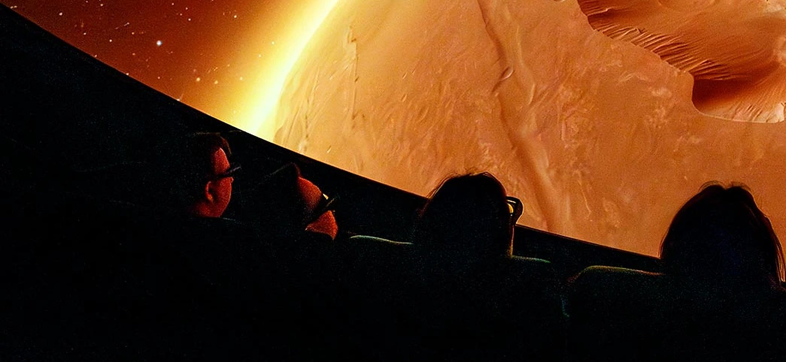
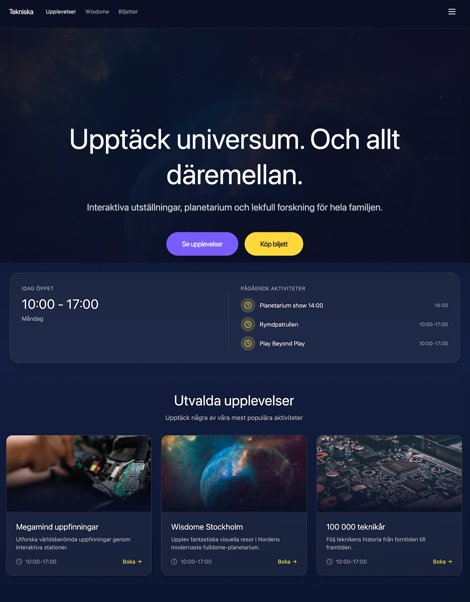
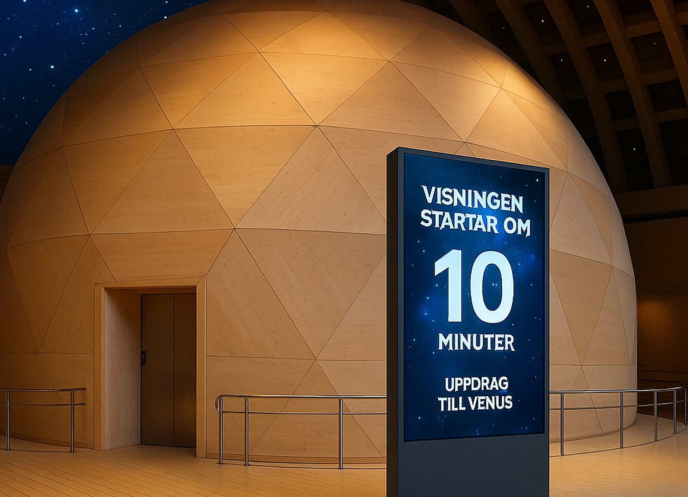
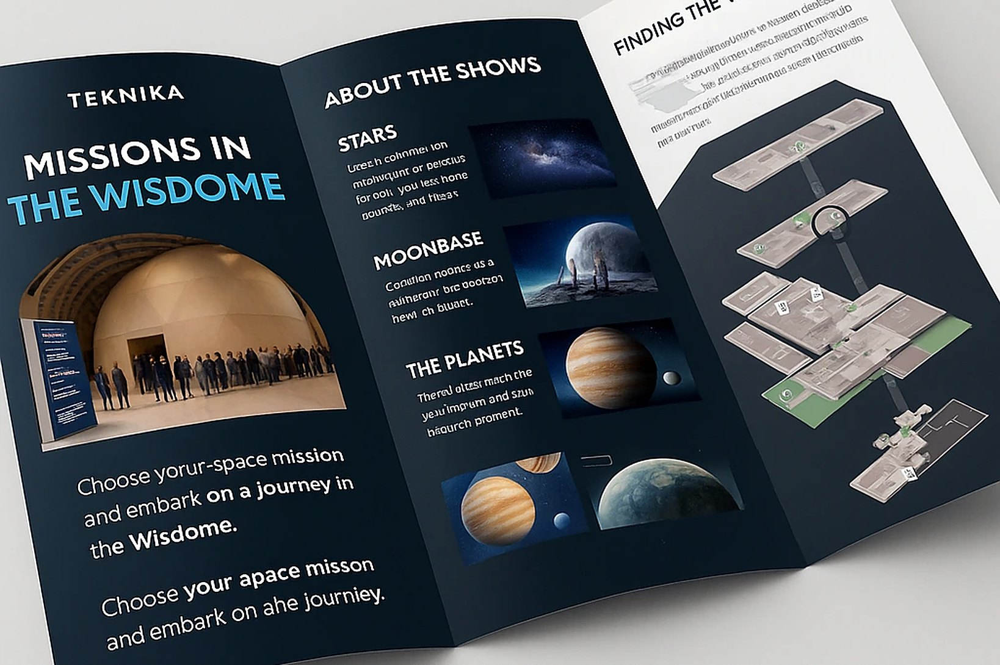

WISDOME

My role
- TeamMe and three classmates
- What I didResearch together with the team, then the website prototype and its iterations
- Not my workThe AI images of the screens and brochure, made by my classmates
- ToolsFigmaFigma AI
Introduction
Wisdome is the planetarium dome at Tekniska museet. We explored how the visit around a show could be clearer, more engaging and build more anticipation, both before and after the show.
Design challenge
How might we create an onboarding that helps visitors understand, prepare and get engaged, and builds anticipation and a sense of taking part?
Research
- Museum visitsWe spent a week at the museum, collecting data from visitors.
- InterviewsTalks with visitors about their experience.
- SurveySent to past visitors and to people who had booked a visit.
- ObservationWe gave some visitors free tickets and followed their visit.
The website
To see what was on, visitors had to click into each show one by one. I designed a clear schedule that shows today’s opening hours and shows at a glance, so planning the day is easier.
Figma AI had just launched, and I used it for the prototype. The first version was hard, but each iteration got easier as I learned how it worked.

The visit
The rest of the concept follows the visitor from the entrance into the dome.

Countdown screens
A screen at the entrance shows the next show and counts down to it. Inside the dome, the countdown continues with music that sets the mood.

Reusable brochure
Visitors borrow a brochure and hand it back, to cut waste. It has a map of the museum and the shows, with recommended ages.
What I learned
A visit is one connected journey. Small things around the show, like a clear schedule or a countdown, shape how people feel about the show itself. We also had to balance what visitors want with what staff can manage.